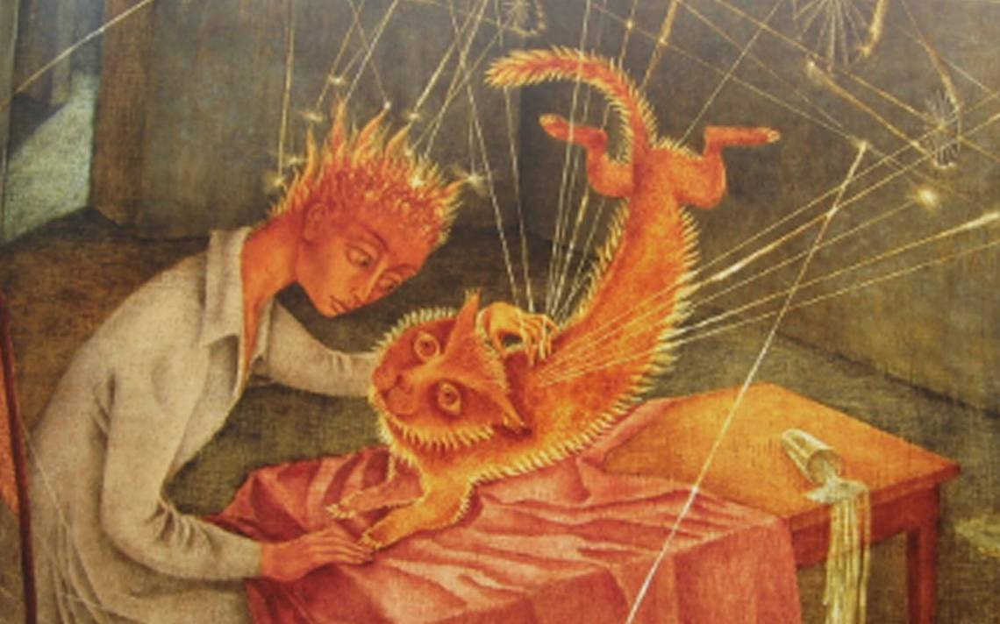

14 Откройся эволюции
Прошлой ночью я видела странный сон: словно кто-то тонким инструментом протягивал дополнительные огненные нити между полушариями мозга крест-накрест: от низа правого полушария к верху левого. При этом я ощущала легкую боль, чувствовала, как низ правого полушария горит. Это сопровождалось удивительными картинами: ярко-оранжевые нити тянулись на фоне странных ландшафтов цвета морской волны.
Затем прозвучала фраза: “Откройся Эволюции”.
На пробуждении я услышала голос:
- Проснись. Открой глаза. Ты на пороге новой жизни. Выброси весь старый хлам, возьми с собой лишь самое ценное. Будь собой.
- Что со мной произошло? - спрашиваю, приоткрывая один глаз в ночи.
- Из тебя вытянули всю душу, вывернули наизнанку и бросили умирать.
- Я точно не умерла?
- Ты была мертва. Мы тебя испытывали, мучили, потом убили и возвращаем к жизни. Ты ведь сама на это подписалась. В результате этой метаморфозы умер прежний человек и рождается новое существо. Мы тебя принимаем и любим.
- Я рада, что вы меня не оставили.
- Мы знаем, ты была разочарована, решила, что мы тебя оставили. Мы должны были тебя через это провести. Соскребли с твоей души наждачной бумагой всё лживое и наносное, сожгли огнём безжалостной правды. Как личность ты умерла. Наши методы жёсткие, но эффективные. А теперь ты вновь рождёна.
- Почему вы меня выбрали? Судя по вашему выбору, вы останавливаетесь далеко не на лучших представителях человечества.
- Ты пришла на наш зов, тебя вел голос внутреннего нерожденного темного ядра. Ты готова была отдать жизнь, чтобы раскрыть эту тайну. Поэтому мы здесь.
- А теперь кто я? Я стала одной из вас?
- Да. Вскоре ты узнаешь и поймёшь, кто ты. Но никому ничего не скажешь.
- Иначе мне хана?
- Нет. На твоих губах будет печать. Печать понимания, что любое твоё неосторожное слово может принести людям вред. Увы, но Прометеи плохо кончают, а огонь, полученный преждевременно, несёт не только защиту, но также боль и разрушения.
- Это верно. Что со мной происходит? У меня всё болит, правое полушарие пульсирует, словно по нему идёт ток, отдаёт на ухо и зуб. У меня развилась опухоль мозга?
- Всё в порядке. Ты рождаешься. У тебя впереди новый мир. Галерея новых миров. То, о чём ты сейчас не можешь даже помыслить. Проснись, началось второе рождение! Откройся Эволюции.
Когда я окончательно очнулась, ощущения огня и боли все еще сохранялись. Что они со мной проделали?
Тошнило. Появилось стойкое понимание, что пора выкинуть весь старый хлам из жизни и взять только самое ценное. Что я стою на пороге иного мира. Этой волне нужно открыться, её нельзя сдерживать. Пусть она пройдет сквозь, полностью накроет, изменит, преобразует.
Вначале появилось желание увидеть яркие краски, самой нарисовать картину. От цветовых сочетаний, которые приходили на ум, лихорадило.
Огненное ощущение в голове сохранялось весь день.
- Процесс перехода и рождения достаточно сложен и занимает время. Никто с ночи на утро не рождается. Подожди, пройдет немного времени, ты сможешь прийти к нам. Дай время своему организму отдохнуть. Ты даже не представляешь, какой стресс ты пережила. Теперь тебе нужно восстановиться и позволить перерождению спокойно завершиться.
- Хорошо.
- Но никто тебя не понесет на руках, как младенца. Мы протянули тебе руку - но идти ты будешь сама! Тебя зря что ли все эти годы учили управлять сном? Вспоминай все свои навыки. Во сне тебя встретим.
-
Вечером я вдруг осознала: какое же счастье, что меня не взяли с собой в тот самый мир тогда, когда разочаровали! Нет, они не бросили, не предали меня, наоборот! Они дали мне шанс самой пройти весь этот путь. Неужели я ждала, что меня приведут за ручку? Чем я заслужила, чтобы меня взяли с собой сразу? Что для этого сделала, какую работу провела? Тогда еще в самом деле было слишком рано! Зачем тащить весь ворох старого хлама с собой в другой мир? Чтобы учиться и познать новое - надо прийти чистым, с широко распахнутыми глазами. И именно так - я не предала себя.
Даже слезы выступили на глазах: я поблагодарила невидимых друзей за то, что не взяли меня с собой. Ведь это было бы так просто! Чего бы я достигла? Ведь чтобы шагнуть в другой мир, надо самой преобразоваться, стать другой, в то же время не предать себя и оставаться собой. А ведь они могли бы в момент отчаяния предложить мне на каких-нибудь очень неприятных условиях подписать второй договор и взять меня с собой. Но они этого не сделали! Они могли бы поймать в ловушку, но не поймали! Кто же они такие? Хитрые беспринципные торгаши, как описывал их Эдик? Или все же нет... Или их план еще хитрее?
Складывалось ощущение, что они намеренно подталкивали меня к эволюции, к пересмотру своей жизни.
Нет, решительно, либо их план еще хитрее, либо они делают все, чтобы я развивалась. То есть, решили сделать меня равной себе по-настоящему.
Жажда узнать, увидеть новые миры, новые неведомые мне измерения затмила все остальное.
Я - искатель, иду по пути своего становления. По крайней мере, теперь я отдаю себе отчет, что там, дальше - не пустота, что горизонты познания - бесконечны и есть, куда идти. А успокоиться и свить гнездышко.. ну извините. Пусть я даже проиграю, но не предам себя. Ведь моя душа просит именно этого. Да, я пассионарий! Это тот самый чарующий Зов Тайны, Зов вампира, который преобразовался в тягу к познанию. В этом суть. Ва-банк, товарищи! Как всегда. Не размениваясь. Не обманывая себя. Только честно, только по-настоящему!
Отныне я не имею права на слабость: мой союзник - это хищный зверь, который мне помогает, пока я сильна. Стоит мне проявить слабину - он набросится на меня. Хочется быть ведомой, это заманчиво. Хочется чувствовать их присутствие, следовать тому, что они говорят, но это путь в бездну и им самим такой союзник в лице меня не нужен. Что бы они не говорили, им лучше иметь сильного союзника, который их не предаст, который с ними всегда, а не от веяния к веянию.
Но как же хочется ощутить их постоянную поддержку!
Пришло время из состояния Искателя перейти в состояние Архитектора. Бросить вызов самой себе ради становления себя настоящей. Как писали алхимики, после метафизической смерти, вновь рождённый получает нестандартную задачу, которая раньше ему могла бы показаться невозможной. Чтобы её решить, надо шагнуть в неизвестность, пройти через боль и отчаяние, остаться одной в пустоте, но не предать себя. Тогда тьма нигредо сменится сиянием альбедо, родится Архитектор. Дважды рождённый обретает себя. Настоящего.
Поиск Архитектора отличается от поиска Искателя тем, что в первом случае существует явная осознаваемая конечная цель, в то время как Искатель руководствуется бессознательным. При этом и тот и другой поиск может быть интуитивным, содержать творческие озарения.
Быть архитектором - творчески управлять, быть хозяином положения.
Работу надо вести 24 часа в сутки, исключить все лишнее, не тратить ни секунды напрасно. Структурировать свою жизнь, а сложности и препятствия рассматривать как тренажер для развития воли.
Как архитектор, я должна построить мост через междумирие, объединяющие оба мира и по звездному мосту прийти в их мир сама. Хватит ждать!
Это вызов Силе. Причем он не единичный. Нельзя победить и успокоиться. Потом все время придется доказывать силе, что ты её достоин. Иначе сила как хищный зверь набросится на своего хозяина.
